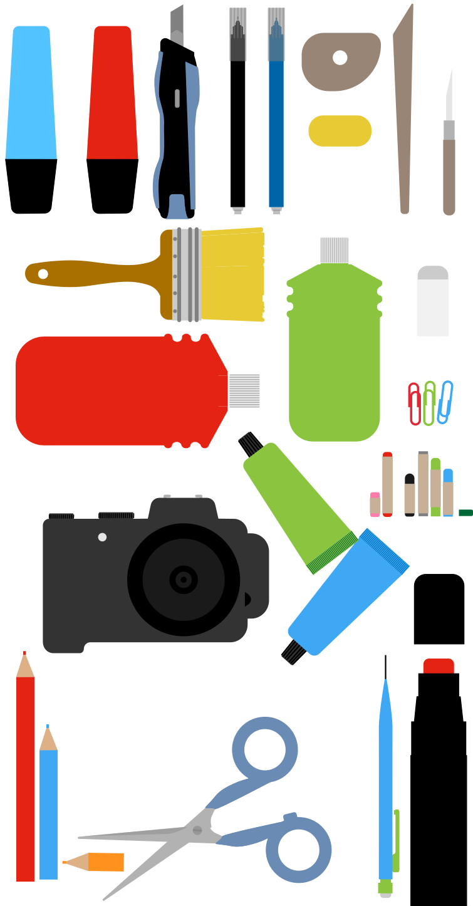

formes vectoriels
Il s’agit d’un travail de formes vectorielles, représentant divers outils et médiums qu’utilisent les élèves d’Auguste Renoir pendant leur formation.
Dessins destinés à composer l'affiche de portes ouvertes de l'école (2026).

←
* Abobe Illustrator
2026